Grand Duchess Aleksandra Nikolaevna at the time of her betrothal to Prince Friedrich of Hesse-Kassel in 1843
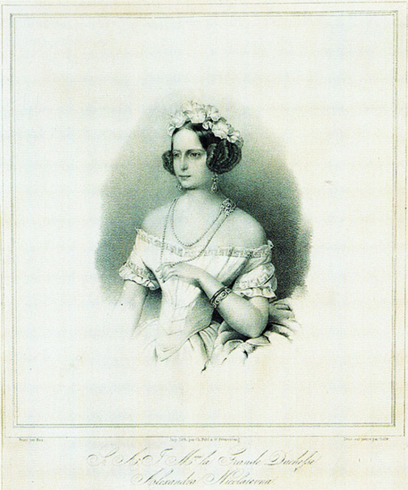
Charles Pohl. Grand Duchess Aleksandra Nikolaevna. 1843. Lithograph by M. Golde, Imperial Lithograph in St. Petersburg from a watercolor by Woldemar Hau (1816–1895). 33 x 28.8 cm. Museum Schloss Fasanerie, Eichenzell, Germany. (Dobler et al., Die mitgift einer Zarentochter, pp. 104–105) [full resolution image]
Image 445
Prince Friedrich of Hesse-Kassel at the time of his betrothal to Grand Duchess Aleksandra Nikolaevna in 1843
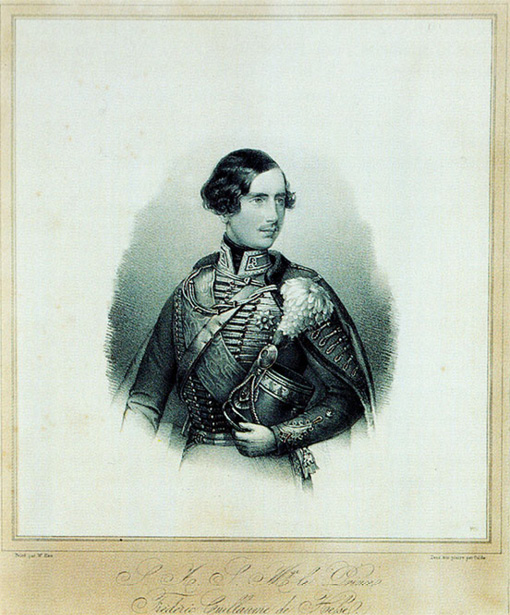
Charles Pohl. Prince Friedrich Wilhelm of Hesse-Kassel. 1843. Lithograph by M. Golde, Imperial Lithograph in St. Petersburg from an oil painting by Woldemar Hau (1816–1895). 33 x 28.8 cm. Museum Schloss Fasanerie, Eichenzell, Germany. (Dobler et al., Die mitgift einer Zarentochter, pp. 104–105) [full resolution image]
Image 446
First page of the Ceremonial received by John S. Maxwell, then secretary of the American Legation in St. Petersburg
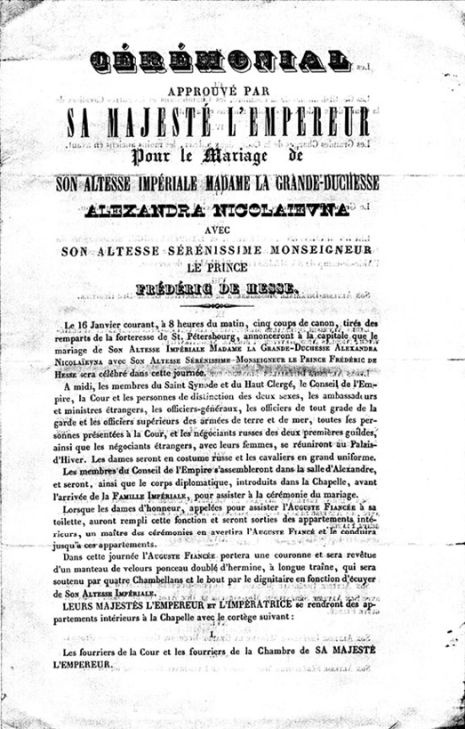
First page of the Ceremonial approved by His Majesty the Emperor for the marriage of Her Imperial Highness Grand Duchess Aleksandra Nikolaevna and His Serene Highness Prince Friedrich of Hesse (NYHS: Maxwell Papers) [full resolution image]
Image 447
The (New) Alexander Palace in Tsarskoe Selo, where the Imperial family lived, and where Grand Duchess Aleksandra Nikolaevna died
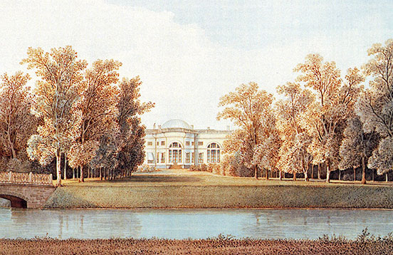
Unknown artist. Palace in Tsarskoe Selo. 1855. Watercolor on paper. 18.4 x 32.3 cm. Schloss Fasanerie Archive, Eichenzell, Germany. (Dobler et al., Die mitgift einer Zarentochter, pp. 98–99) [full resolution image]
Image 448
Plan of the first floor of the (New) Alexander Palace in Tsarskoe Selo, showing (*) the location of the oratory created in memory of Grand Duchess Aleksandra Nikolaevna, between the bedroom of her mother, Her Imperial Majesty, Aleksandra Fyodorovna, and the Blue Salon
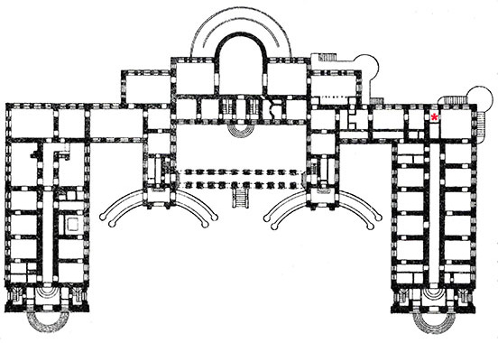
Plan of the Alexander Palace, First Floor. Drawing based on original plan by Giacomo Quarenghi (1744–1817). (adapted from E.F. Gollerbakh, Detskosel’skie dvortsy-muzei i parki Putevoditel‘ [St. Petersburg: Gosudarstvennoe izdatel‘stvo, 1922], p. 59) [full resolution image]
Image 449
Grand Duchess Aleksandra Nikolaevna’s room in the New (Alexander) Palace in Tsarskoe Selo
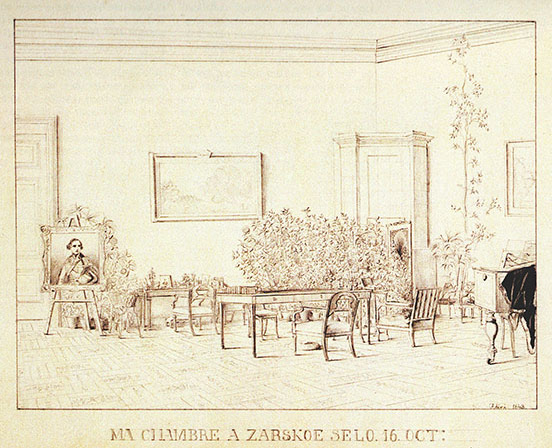
Grand Duchess Aleksandra Nikolaevna. Ma Chambre à Zarskoe Selo 16 Oct [My Room at Tsarskoe Selo 16 Oct]. 1843. Pencil on paper. 22.4 x 28.4 cm. Schloss Fasanerie Archive, Eichenzell, Germany. (Dobler et al., Die mitgift einer Zarentochter, pp. 100–101) [full resolution image]
Image 450
The study of Empress Aleksandra Fyodorovna in the (New) Alexander Palace, in which her daughter Grand Duchess Aleksandra Nikolaevna died in 1844
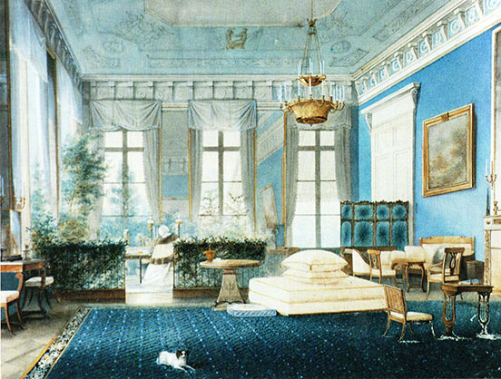
Vladimir Ivanovich (Woldemar) Hau (1816–1895). After 1840. Study of Empress Alexandra Fyodorovna. Watercolor. Depository of the Tsarskoe Selo Palace–Museums. (Bardowskaja and Chodassewitch, Deutsche Prinzessinnen, p. 22) [full resolution image]
Image 451
Portrait of Grand Duchess Aleksandra Nikolaevna painted in 1845
In 1846, Anna Whistler visited the oratory dedicated to Grand Duchess Aleksandra Nikolaevna (1825–1844), created in the corner of the study of her mother, Empress Aleksandra Fyodorovna, in the (New) Alexander Palace. The candlestick and the portrait of Aleksandra Nikolaevna that it stood in front of are shown here.
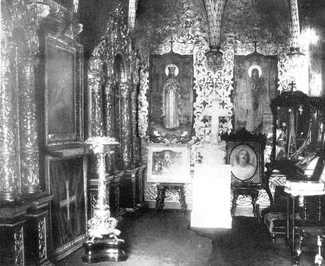
Interior of the Oratory in the Alexander Palace, 1930s. Photograph. Depository of the Tsarskoe Selo Palace–Museums. [full resolution image]
Image 453
In the oratory dedicated to Grand Duchess Aleksandra Nikolaevna hung a portrait of the deceased grand duchess ascending into heaven, painted in 1845 by Karl Briullov.
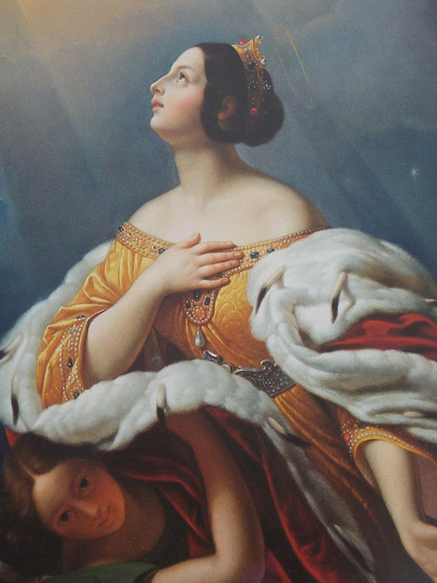
Karl Briullov (1799–1852). Holy Tsarina Alexandra, Ascended to Heaven. 1845. Depository of the Tsarskoe Selo Palace–Museums. [full resolution image]
Image 454
Anna Whistler visited the monument to the deceased Grand Duchess Aleksandra Nikolaevna and her deceased child, Prince Wilhelm, in Tsarskoe Selo in 1846.
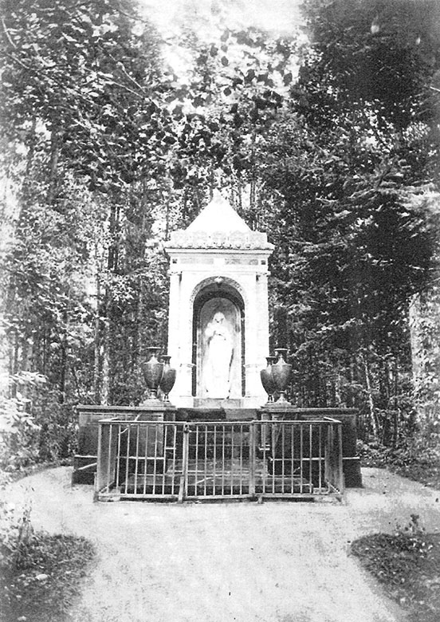
Paolo Catozzi (pavilion) and Giovanni Vitali (statue). Monument in memory of Grand Duchess Aleksandra Nikolaevna. 1845. Marble. Archive of the Tsarskoe Selo Palace–Museums; courtesy of the Depository of the Tsarskoe Selo Palace–Museums. [full resolution image]
Image 455
The statue of the deceased Grand Duchess Aleksandra Nikolaevna and her deceased child
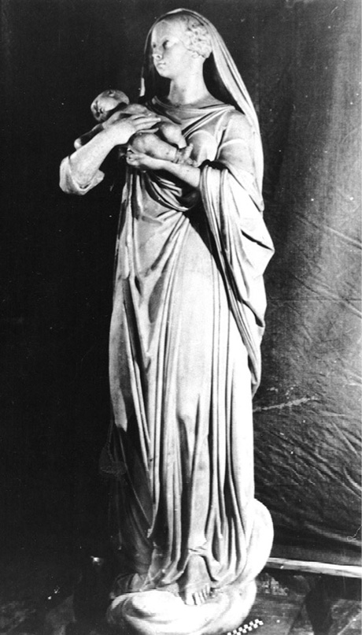
Giovanni Vitali. Statue of the Grand Duchess Aleksandra Nikolaevna. 1845. Marble. Depository of the Tsarskoe Selo Palace–Museums; photograph courtesy of the Archive of the Tsarskoe Selo Palace–Museums. [full resolution image]
Image 456
The statue of the deceased Grand Duchess Aleksandra Nikolaevna and her deceased child is said to resemble the angel holding a baby on the tomb of Princess Charlotte and her deceased child in St. George’s Chapel in Windsor, England, which was unveiled in 1824.
In 1846, Anna Whistler visited the little wooden house at Tsarskoe Selo erected in memory of the late Grand Duchess Aleksandra Nikolaevna.
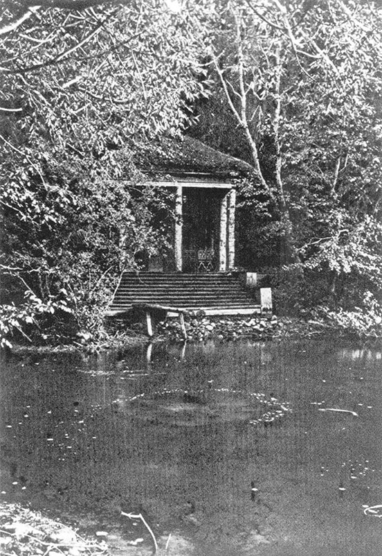
D. Efimov. The Little House in Tsarskoe Selo in Memory of Grand Duchess Aleksandra Nikolaevna. 1845. Wood construction. (Vil’chkovskii, Tsarskoe Selo, facing p. 190) [full resolution image]
Images 458, 459
Grand Duchess Aleksandra Nikolaevna, who had tuberculosis, was given the “cowshed treatment” at the farm inTsarskoe Selo, but could not endure it.
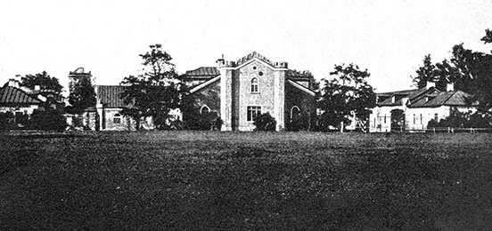
The Royal Farm at Tsarskoe Selo. Photograph. 1910. (Benois, Tsarskoe Selo, p. 221) [full resolution image]
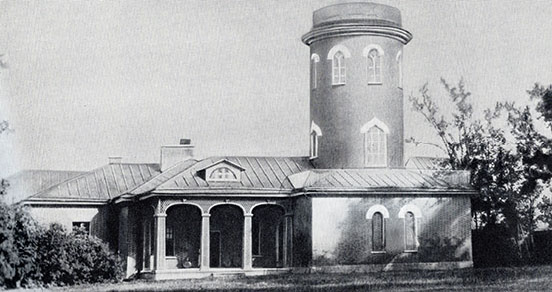
The Farm Wing with Tower. Photograph. Beginning of the 1900s. (Pamiatniki arkhitektury prigorodov Leningrada, p. 127) [full resolution image]
Image 460
Alexandra Hospital for Women, established in memory of Grand Duchess Aleksandra Nikolaevna in 1844 by her husband Prince Friedrich of Hesse-Kassel